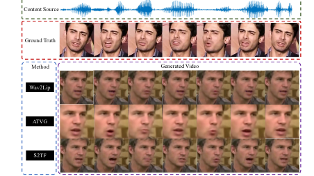

Hang Zhou
 |
Ph.D |
About me
I am currently a senior researcher at Department of Computer Vision Technology (VIS), Baidu Inc. I obtained my Ph.D. degree from Multimedia Lab (MMLab), The Chinese University of Hong Kong in 2021, supervised by Prof. Xiaogang Wang and Prof. Ziwei Liu. I received my bachelor's degree in Acoustics from the School of Physics at Nanjing University (NJU) in 2017. My research interests include deep learning and its applications on audio-visual learning and face generation for virtual humans. Please drop me an email if you are interested in internship or full-time opportunities.
News
[2022-12] One paper accepted to AAAI 2023.
[2022-10] Three papers accepted to WACV 2023.
[2022-09] Three papers accepted, one to SIGGRAPH Asia 2022 and two to NeurIPS 2022.
[2022-07] Four papers accepted to ECCV 2022.
[2022-05] One paper accepted to SIGGRAPH 2022.
[2022-03] Three papers accepted to CVPR 2022.
[2021-12] Two papers accepted to AAAI 2022.
[2021-04] One paper accepted to IJCAI 2021.
[2021-03] Three papers accepted to CVPR 2021!
[2021-01] One paper accepted to CHI 2021.
[2020-10] I am among the Top 10% High Score Reviewers of NeurIPS 2020.
[2020-07] Two papers accepted to ECCV 2020.
[2020-06] I am awarded Outstanding Reviewer of CVPR 2020.
[2020-02] One paper accepted to CVPR 2020.
[2019-07] Two papers accepted to ICCV 2019.
[2018-11] One paper accepted to AAAI 2019 as Oral.
Publications
*Equal contribition, †Corresponding author
Yasheng Sun*, Hang Zhou*, Kaisiyuan Wang, Qianyi Wu, Zhibin Hong, Jingtuo Liu, Errui Ding, Jingdong Wang, Ziwei Liu, Hideki Koike SIGGRAPH Asia 2022 Conference. PDF Project |
Xian Liu, Qianyi Wu, Hang Zhou, Yuanqi Du, Wayne Wu, Dahua Lin, Ziwei Liu NeurIPS 2022 (Spotlight Presentation). PDF Project Code |
Jiazhi Guan, Hang Zhou, Zhibin Hong, Errui Ding, Jingdong Wang, Chengbin Quan, Youjian Zhao NeurIPS 2022. |
 |
Yasheng Sun, Jiangke Lin, Hang Zhou, Zhiliang Xu, Dongliang He, Hideki Koike IEEE/CVF Winter Conference on Applications of Computer Vision (WACV) 2023. PDF Project |
Xinchi Zhou, Dongzhan Zhou, Wanli Ouyang, Hang Zhou, Di Hu IEEE/CVF Winter Conference on Applications of Computer Vision (WACV) 2023. |
Xinchi Zhou, Dongzhan Zhou, Di Hu, Hang Zhou, Wanli Ouyang IEEE/CVF Winter Conference on Applications of Computer Vision (WACV) 2023. |
 |
Zhiliang Xu*, Hang Zhou*†, Zhibin Hong, Ziwei Liu, Jiaming Liu, Zhizhi Guo, Junyu Han, Jingtuo Liu, Errui Ding, Jingdong Wang European Conference on Computer Vision (ECCV) 2022. PDF Project Code |
Xian Liu, Yinghao Xu, Qianyi Wu, Hang Zhou, Wayne Wu, Bolei Zhou European Conference on Computer Vision (ECCV) 2022 (Oral Presentation). PDF Project Code |
Haoyue Cheng, Zhaoyang Liu, Hang Zhou, Chen Qian, Wayne Wu, Limin Wang European Conference on Computer Vision (ECCV) 2022. PDF Code |
Jihao Liu, Boxiao Liu, Hang Zhou, Hongsheng Li, Yu Liu European Conference on Computer Vision (ECCV) 2022. PDF Code |
 |
Xinya Ji, Hang Zhou, Kaisiyuan Wang, Qianyi Wu, Wayne Wu, Feng Xu, Xun Cao SIGGRAPH 2022 Conference Proceedings. PDF Project Code |
Changyong Shu, Hemao Wu, Hang Zhou†, Jiaming Liu†, Zhibin Hong, Changxing Ding, Junyu Han, Jingtuo Liu, Errui Ding, Jingdong Wang IEEE/CVF Conference on Computer Vision and Pattern Recognition (CVPR) 2022 (Oral Presentation). PDF Project Code |
Xian Liu, Qianyi Wu, Hang Zhou, Yinghao Xu, Rui Qian, Xinyi Lin, Xiaowei Zhou, Wayne Wu, Bo Dai, and Bolei Zhou IEEE/CVF Conference on Computer Vision and Pattern Recognition (CVPR) 2022. PDF Project Code |
Borong Liang*, Yan Pan*, Zhizhi Guo†, Hang Zhou†, Zhibin Hong, Xiaoguang Han, Junyu Han, Jingtuo Liu, Errui Ding, Jingdong Wang IEEE/CVF Conference on Computer Vision and Pattern Recognition (CVPR) 2022. |
 |
Xian Liu*, Rui Qian*, Hang Zhou*, Di Hu, Weiyao Lin, Ziwei Liu, Bolei Zhou, Xiaowei Zhou AAAI Conference on Artificial Intelligence (AAAI) 2022. PDF Code |
Dongzhan Zhou, Xinchi Zhou, Di Hu, Hang Zhou, Lei Bai, Ziwei Liu, Wanli Ouyang. AAAI Conference on Artificial Intelligence (AAAI) 2022. |
 |
Hang Zhou, Yasheng Sun, Wayne Wu, Chen Change Loy, Xiaogang Wang, Ziwei Liu IEEE/CVF Conference on Computer Vision and Pattern Recognition (CVPR) 2021. PDF Project Code |
Xudong Xu*, Hang Zhou*, Ziwei Liu, Bo Dai, Xiaogang Wang, Dahua Lin IEEE/CVF Conference on Computer Vision and Pattern Recognition (CVPR) 2021. PDF Project Code |
Xinya Ji, Hang Zhou, Kaisiyuan Wang, Wayne Wu, Chen Change Loy, Xun Cao, Feng Xu IEEE/CVF Conference on Computer Vision and Pattern Recognition (CVPR) 2021. PDF Project |
|  | Yasheng Sun*, Hang Zhou*, Ziwei Liu, Hideki Koike International Joint Conference on Artificial Intelligence (IJCAI) 2021. |
Yaohua Bu*, Tianyi Ma*, Weijun Li, Hang Zhou, Jia Jia, Shengqi Chen, Kaiyuan Xu, Dachuan Shi, Haozhe Wu, Zhihan Yang, Kun Li, Zhiyong Wu, Yuanchun Shi, Xiaobo Lu, Ziwei Liu ACM CHI Conference on Human Factors in Computing Systems (CHI) 2021. PDF Demo |
Hang Zhou*, Xudong Xu*, Dahua Lin, Xiaogang Wang, Ziwei Liu European Conference on Computer Vision (ECCV) 2020. PDF Project Code |
 |
Manyuan Zhang, Guanglu Song, Hang Zhou, Yu Liu European Conference on Computer Vision (ECCV) 2020. |
Hang Zhou*, Jihao Liu*, Ziwei Liu, Yu Liu, Xiaogang Wang IEEE/CVF Conference on Computer Vision and Pattern Recognition (CVPR) 2020. PDF Code |
Hang Zhou, Ziwei Liu, Xudong Xu, Ping Luo, Xiaogang Wang International Conference on Computer Vision (ICCV) 2019. PDF Project Code |
Yu Xiong, Qingqiu Huang, Lingfeng Guo, Hang Zhou, Bolei Zhou, Dahua Lin International Conference on Computer Vision (ICCV) 2019 (Oral Presentation). PDF Project Code |
Xiaoqi Jia*, Jianwei Tai*, Hang Zhou, Yakai Li, Weijuan Zhang, Haichao Du, Qingjia Huang European Conference on Artificial Intelligence (ECAI) 2020 (Oral Presentation). |
Hang Zhou, Yu Liu, Ziwei Liu, Ping Luo, Xiaogang Wang AAAI Conference on Artificial Intelligence (AAAI) 2019 (Oral Presentation). PDF Project Code |
Working Experience
Research assistant at Multimedia Lab (MMLab), CUHK. (Feb. 2017 to May 2017)
Worked on lip reading.
Professional Activities
- Organizer of ECCV 2020 SenseHuman Workshop
- Journal Reviewer of IJCV, Transactions on Audio Speech and Language Processing, Neurocomputing, TPAMI, etc.
- Conference Reviewer of ICCV, CVPR, ECCV, ICML, AAAI, NeurIPS, ICLR, Siggraph, etc.
Collaborators
- I am fortunate to have closely collaborated with Xudong Xu, Qianyi Wu, Dr. Wayne Wu, Dr. Yu Liu and Prof. Ping Luo.
- I am also fortunate to have provided help to talented mentees including Xian Liu, Yasheng Sun, Jiaxiang Tang, Xinya Ji, and Jihao Liu.
Teaching Experience
Teaching Assistant of the following courses in The Chinese University of Hong Kong:
ELEG5491, Introduction to Deep Learning , Spring 2019.
ELEG5760, Machine Learning for Signal Processing Applications, Fall 2018.
ENGG2420B, Complex Analysis and Differential Equations for Engineers, Fall 2018.
ENGG1110, Problem Solving By Programming, Spring 2018.
ENGG2420B, Complex Analysis and Differential Equations for Engineers, Fall 2017.